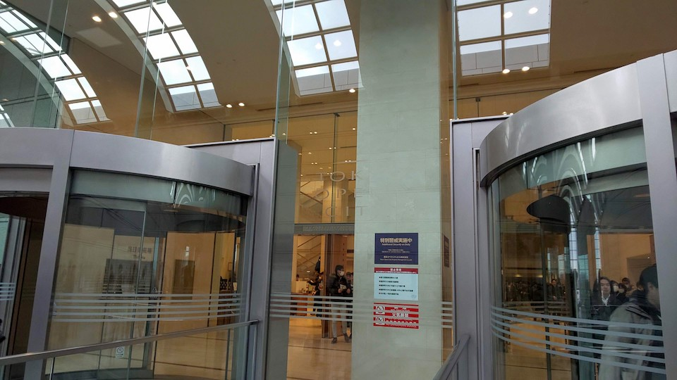
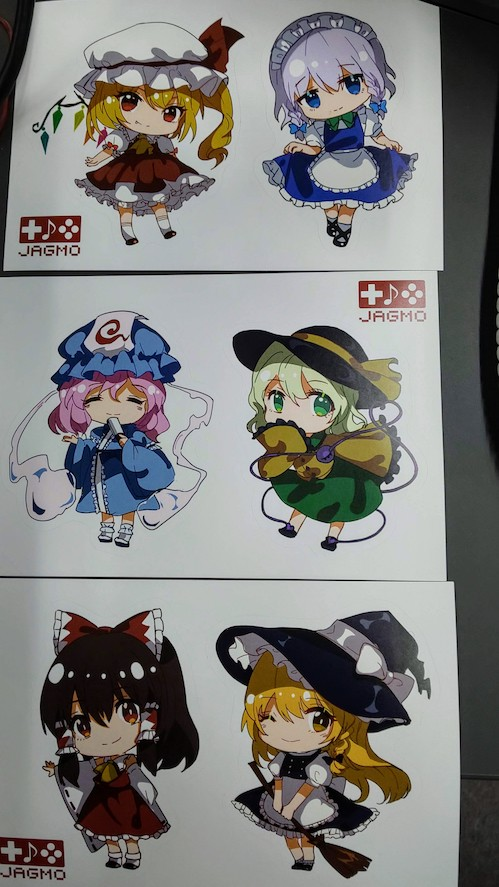

東方Projectのクラシックコンサートに行ってきました
2020-01-28 10:45:17 +0900 JST
Categories: Event
東京オペラシティで開催された東方ProjectのゲームBGMクラシックコンサートに行ってきました。

東方Projectのゲームはかなり昔に遊んだことがありますが、東方星蓮船の体験版が最後に遊んだ作品ですね。PC-98のシリーズはやったことないのでにわかもにわかですね。
実は東方のBGMに限らずゲームBGMが私すごい好きで、Google Play Musicにアップロードしている曲の半分ぐらいは購入したゲームサントラだったりします。大好きな星のカービィシリーズをはじめアトリエシリーズ、スマブラ、魔界戦記ディスガイア、面白いところではScribblenautsなど。どれもオススメ。
スーパーマリオ、星のカービィやゼルダの伝説シリーズなどは記念に任天堂が主催するクラシックコンサートが行われたこともあります。ゼルダは行けなかったのですが、星のカービィとスーパーマリオのコンサートは参加しました。ゲームミュージックをクラシックコンサートで聞くというのはものすごい新鮮味がありました。
そんなわけで東方Projectのコンサートがあると知ってセトリも見ずチケットを購入しました。あとでセトリ見ると半分近く知らない作品でした・・・。

結論からいうとめっちゃ楽しめました。
ほとんどが知らない曲なのですが、どこかで聞いたことのあるZUN節を所々感じ取れたり、知らない曲でもすぐ近くで演奏されているのを見るだけでも楽しいものです。
ちょっとびっくりしたのが、後半の部の最初に演奏された曲の奏者が半分ほどの人数だったのです。これがインテルメッツォというやつなのかなと。初めて聞きました。インテルメッツォという言葉は星のカービィロボボプラネットで初めて知りました。星のカービィは学習コンテンツ。
すぐに残りの奏者も参加しにぎやかな演奏が始まりました。
パンフレットにはセトリの具体的な順番の記載がなかったのですが、トリに選ばれたのが東方地霊殿でした。地霊殿だ！知ってる曲だ！しかも好き！
特ににハルトマンの妖怪少女はすごかったです。原曲が7拍子なので非常に演奏しにくそうだなというのはいらぬ心配でした。一番の盛り上がりを演出しつつも今回のコンサート向けに編曲されておりこれだけでお値段以上に楽しめました。
アンコールはU.N.オーエンは彼女なのか？&亡き王女の為のセプテットとまぁこれだよねっていう曲。はじめアンコールの仕方がわからず…足音バタバタ出す方か手拍子ただんだんみんなリズムに合っていくのとどっちだろうと思ったんですが、普通に拍手咲き乱れの状態でアンコールがはじまりました。
今度いくときはもうちょっと新しめの作品を勉強してからのほうがよさそうだと思いました。やはり知ってる曲だとそれだけでワクワク感が違いましたから。
あとグッズ販売で買ったステッカーは東方好きの同僚にプレゼントしました。

東方Projectフルオーケストラ公演『幻想郷の交響楽団 - 夢現つ嘯風弄月 - 』感想
オケでのドラムスの存在、塩梅が難しいなぁと感じました。
確かにー。私もドラムの主張がちょっと強い&ドラムで曲がややはしり気味ではと思いながら聴いていました。かっこよかったけどね。